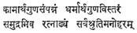

THE
PURSUIT OF DHARMA IN THE RAMAYANA *
By K. SAVITRI AMMAL
John Ruskin speaks of the book of the moment, the book of the hour and the book of all time. We know of course what is meant by the book of the moment and the book of the hour. They are the achievements of the modern printing press, the benefit of which to mankind, however, is very much to be doubted. We know the cheap periodicals and the still cheaper fiction printed and sold by hundreds of thousands every day. The books of all time, on the other hand, contain the imperishable thoughts and utterances of highly evolved souls and so they stand for all time defying the passage of time.
The
book of Islam is held in so great a veneration by those belonging to that
religion, that it has been said “What need for other books if there is the
Koran? What avails indeed all the books in the world if there is not the
Koran?” Should not we, the Hindus, say the same thing of our own Ramayana, the
Mahabharata and the other Puranas with perhaps a greater measure of
truth? These have come down to us, indeed, surviving all these thousands of
years, their glory undiminished for all the vicissitudes of time. Has not
Brahma, the Loka Pitamaha, himself blessed the immortal Epic of Valmiki with
these prophetic words that as long as the mountains stand and the rivers flow
in the world, the story of Rama will continue to be told.
He
further bestowed on him the essential requisite of a poet that whatever came
from his lips will be nothing but the truth.
It was the fervent
belief of the people that when God the Parama Purusha Himself came on earth as
a human being to establish Dharma and chose King Dasaratha as his father, the
Vedas also took birth from Valmiki.
So
the essence of the Ramayana with all its beauty, its poetry, and its
narrative excellence, it is held, is only what is contained in the Vedas; for
it is believed, what the Vedas enjoin with authority as in a tone of command,
literature proposes to tell as the beloved in a sweet persuasive way. The true
function of literature, it is acknowledged, is not only to entertain us in our
happy moments but to be our best comfort when we are down with sorrow. Have we
not seen the Ramayana proving an invaluable source of help to thousands
of people in their hour of trial and tribulation and has it not saved them from
falling a prey to utter despair and desolation? We know how the Divine
personality of Sri Rama enthralled the imagination so much from age to age that
it produced great saints and poets like Tulsidas, Tyagaraja, Kamban as well as
a host of others, who are rendered immortal through their works.
The Ramayana has
been described as

Verily, those who dive
deep into the poem will find thoughts as rare and precious as the very gems of
the sea. Where else can we look for the description of Nature in such beautiful
melifluous language than in the Ramayana or the apt Upamas and Alankaras
which abound in the poem? Do we need any reference, of Arthasastra, Rajaneeti,
Political Science or similar things? The Ramayana provides ample scope
for them. It is marvellous how war has been described in such minute detail.
Thomas Carlyle says in his Hero as a Poet, “The poet who could merely
sit on a chair and compose stanzas would never make a stanza worth much. He could
not sing the Heroic Warrior unless he himself were at least a Heroic Warrior
too. I fancy there is in him the politician, the thinker, legislator,
philosopher in one or the other degree; he could have been, he is, all
these–Shakespeare–one knows not what he could not have made in the supreme
degree.” Do we not feel the same thing about Valmiki? Unless he be the great
Tapasvi that he is said to be, how could he be all those men at the same time
in that supreme degree as emphasized by Carlyle?
As
I was studying the Ramayana, the oft-quoted word “Dharma” in the poem
gave rise to a train of thoughts which led me to analyse the world of Valmiki.
The characters, almost all of them, seem to have so high a moral sense that
nothing seems to have the power to shake them from it whatever the temptation
may be. They hardly entertain any doubts as to what they should do in a given
set of circumstances. Indeed, they have too clear a view of the path they have
chosen, however dark it may be.
Let
us take Sri Rama the embodiment of Dharma as conceived by Valmiki. No sooner is he told that he is to be
installed on the throne as the Yuvaraja than he is asked to renounce it and
take himself as an exile to the Dandaka forest for 14 years. Do these words
startle him or even make him wince? No! he is hardly agitated. He does not even
show any sign of surprise at all, at the too sudden a turn of events. For, he
belongs to the order of Sthitapragnyas who are neither affected by grief nor by
desire for pleasures and who are free from attachment, fear and anger.
He sees his father
bound by his promise to Kaikeyi and as his son it is upto him to help him to be
true to his word. His duty lies before him so unequivocally clear that he will
allow nothing to make him swerve from it. As a Sthitapragnya he is nothing
daunted by the so called terrors of the forest, nor is he in any way attracted
by the pleasures of a kingly life. Listen how he replies to Kaikeyi “Mother, I
do not want to live attached to riches. Know that I am like the Rishis of old
strictly following the path of Dharma.”
He is prepared to
start alone for the forest. But the faithful Lakshmana will go with him though
he is no way bound to accompany him, for he feels without a doubt that his
place is by the side of Rama wherever he goes. Is he not Rama’s Again there is Sita whom Rama dissuades from
going with him as far as he can, advising her to attend to the comforts of his
aged father and mother in his absence. But she is not one to be so easily set
aside but one with a will of her own. She entertains so clear a conviction as
to the conduct of an ideal wife that she is determined to follow him even to
the end of the earth. As a “Pativrata” or “Sahachari” she declares she has no
life apart from him. Listen to what she says to Kausalya
Thus Rama’s exile is
greatly lightened by the loving company of both Sita and Lakshmana. It is
amusing how even the hard-hearted Manthara is not callous enough to advise
Kaikeyi to insist on Rama going alone to the forest.
It is also interesting
to note that though Dasaratha actually gives up his life unable to bear the
pangs of separation from Rama yet he cannot bring himself on that account to be
untrue to his word. Indeed he would rather, his beloved Rama be banished to the
forest living a hermit’s life for 14 years, than himself prove false to his
promise. His sense of honour is too high for him to ignore it even in such a
crisis. What shall we say about Sumitra the mother of Lakshmana to whom it has
been given along with Tara and Mandothari to realise the divine in Sri Rama?
Hence she is mentioned in the poem as What mother would willingly make her son
undergo, as she does, the hardships of the forest to which he is no way bound?
But her conception of duty or Dharma is so exalted that she is simply impatient
to send him away when he comes to take leave of her. Mark
what she says:
And then Bharata! To
what a height does he rise when we come to think of him! He is so noble, so
high souled that the great Tamil poet Kamban has not scrupled to depict him
even superior to Sri Rama. Let us listen to the famous verse of Kamban.
“Your
refusal to accept the kingdom legally your own, when bestowed on you by your
father, as a thing of the greatest evil on earth, makes me wonder if even a
thousand Ramas can be your equal!”
They
are the words of Guha spoken in his profound admiration at the magnanimity of
Bharata. To be made the king of Ayodhya instead of Sri Rama, though the kingdom
is quite legitimately his own, is so much against his conscience that he will
not rest until he succeeds in bringing back Rama and installing him on the
throne. When he hears from his mother the terrible news of the banishment of
Rama from the kingdom and the death of his father told in such exultation as
though they would make him rejoice, he is lost in such grief and anger that he
denounces her, his own mother, so openly and vehemently that she is plunged in
utter humiliation ever after. How he heaps upon himself all the terrible sins
in the world in answer to the unjust accusation of Kausalya, in such bitter
self-reproach that it frightens all who hear him.
are the words of
Valmiki. Bharata does not care how he condemns the aged Vasishta who has
allowed things that ought not to have happened. While the kingdom has become
his in spite of his protests he however cleverly suggests to Rama in the
Chitrakoota with these words “If I can do what I choose with what is absolutely
mine, then I offer it to you, Oh Rama! Take it from me and be the king of
Ayodhya.” But Rama, who is not the one to go back on his word,

is adamant. He says
nothing will shake him from his pratignya and declares finally
Surely there can be no
breach of Dharma in Rama’s complying with the request of Bharata. He has done
his duty by his father and now when Bharata implores him on his knees, to take
the kingdom and make him free, is it not cruel of Rama to disappoint him? But
Rama’s conception of Dharma is so high that he will keep his vow of 14 years in
the forest at all costs. We know how he cared nothing of sacrificing even Sita
who underwent cheerfully all the hardships of exile with him, in obedience to
an idle scandal about her. He suffered no qualms of conscience or mental
conflict in doing what he considered his Dharma. Mark what he says, in the
words of the poet Bhavabhuti
that he would feel no
remorse in giving up his friendship, his comforts, his compassion, and even
Sita, if it would please the people, as if the people meant more to him than
the sweetest and best of wives on earth. In this connection I am reminded of
the great play Julius Caesar by Shakespeare, in which the character of
Brutus is portrayed with all the nobility in the world. But his mind is
depicted, as torn too much by conflicts, and he becomes a mere tool in the
hands of the conspirators. He kills Caesar; but the tragedy of it is, he hardly
entertains any sense of the enormous crime he has committed. How noble, how
sincere are his words “not that I love Caesar less but I love
We
find in Sri Rama the high trait of placing his duty above everything dear to
him on earth whenever the occasion arises for it. In the Aranya Kanda when Sita
expresses to him gently her doubt as to the propriety of his being aggressive
towards the Rakshasas without sufficient provocation, he replies to her, though
appreciating her concern, that he has given his word, to the Brahmanas, to
protect them from the Rakshasas, which he must keep at all costs. These are his
words:
“I would give up my
life, even you and Lakshmana but not my promise to the Brahmanas” he says.
The
greatness of Rama lies in his being a one whose mind is so under control that
nothing has power to sway it. This makes him rise above all including Bharata.
Bharata, in spite of his being so great
that even a thousand Ramas cannot equal him, in the immortal words of the Tamil
poet, it may be said, cannot fully rise to that state of mind of Sri Rama which
can accept pain or pleasure without the slightest change of his countenance
The poet himself says
with exceeding fervour how Rama’s personality scarcely lost its brilliance even
with the loss of the kingdom.
Bharata is not so
simple, or so impuliive as Lakshmana. He is more intellectual, more severe in
his outlook. He cannot excuse even the slightest weakness in others. How hard
he is on his own mother of whom he speaks with such derision as Will Sri Rama ever say like that? This is
perhaps felt by Keikeyi herself and it makes her say probably to Manthara:
We may infer from this
that Rama is too respectful, too considerate, towards her to note the above
faults in her. Do we not find him chiding Lakshmana on hearing him speak
disparagingly of Kaikeyi?

“No Lakshmana, I will
not have you speak harshly of mother Kaikeyi” he says.
It
is not wrong to suppose that Bharata is too confident of his own powers of
argument in persuading Rama to return with him to Ayodhya. But when all proves
of no avail, he becomes so desperate in mind that he takes the vow of living
the most austere life for 14 years exactly in the same way as Rama. Indeed,
nobody can be so ruthless with himself as Bharata and nobody can be so free
from any mental conflict as to the pursuit of what he considers to be his
Dharma. We have seen the old king lamenting how Rama would at once do what he
asked him when he might easily set him aside. I would
like to imagine Bharata in Rama’s place and see how he behaves. Of course, he
will not care a straw for renouncing the kingdom but it may be supposed he will
not accept the banishment to the forest for 14 years without demanding a
legitimate reason for it.
We
know there are two selves in man–the higher and the lower–which are constantly
at grips with each other, each trying to conquer the other. In a Satvic being,
however, the lower self is held in strict control, whereas in ordinary mortals
the lower nature gains the upper hand. Let us take Vibhishana who, we find, has
chosen the path of righteousness though born a Rakshasa. He tries to make
Ravana realise the vile sin of taking another’s wife by force; but when he
receives, in return, nothing but contempt and insult from Ravana, he loses no
time in deserting him and surrendering himself to Sri Rama. He does not feel
any mental conflict about it, nor is he assailed by any doubts as to the
propriety of his conduct.
It
is significant how even characters like Ravana, Vali, Kumbhakarna, and others,
who have taken to the path of Adharma have not the slightest compunction for
their evil deeds. They have become all too powerful on account of the special
favours of the Gods bestowed on them. Their minds are totally free from any
misgivings as to the evil path they pursue. Ravana never once gives way to
self-introspection and never once realises how base, how reprehensible it is to
desire another’s wife. He says to Sita without any feeling of shame:
His personality
however is so magnificent that even Sri Rama cannot restrain his admiration on
seeing him on the battle-field.
Hanuman too can hardly
help being fascinated by his personality.
Vali, intoxicated with
his own power and physical prowess, quite wrongly misconstrues poor Sugriva’s
action and refuses to pay the slightest heed to his explanations or entreaties.
He denounces him irrevocably. And Indrajit! Is he not too vain of his being the vanquisher of Indra himself, to have any
positive sense of right or wrong? He is past any self-analysis which will make
him pause before resorting to an evil course. Now if we take the other great
epic the Mahabharata we cannot find such a high conception of Dharma or
the conscious adherence to it as in the Ramayana. In the Mahabharata the
play of the higher and the lower selves in man can be seen to a large extent.
Human nature is confronted with problems that require the greatest personal
sacrifice. There is a mingling of both, the good and the bad elements, in equal
proportions. What can we say of Karna who is endowed with all the qualities of
a hero? His sense of gratitude to Duryodhana for having raised him from the
mean status of being a charioteer’s son to the kingship of Anga is so profound
that it binds him to Duryodhana for ever. He is determined to stand by him in
fair and foul weather alike. Nevertheless his jealousy towards Arjuna is
equally so profound that even his mother Kunti’s entreaties to him to desist
from waging war against Arjuna, his own brother, fail to move him; nor does the
intercession of Sri Krishna himself on the same mission prove any more
successful. Karna merely says to
Then
the old blind king Dhritarashtra, who, though he is fully aware of the cruelty
and injustice done by his sons to their cousins, yet, has not the heart to
condemn them.
And
Arjuna, the dearest friend and kinsman of Sri Krishna himself! What is he but a
mixture of extreme strength and weakness at moments of crisis? Mahabharata depicts
the eternal conflict that goes on in human nature and finally the triumph of
good over evil. It is this struggle between evil and good which seems to be
totally absent in the great characters of the Ramayana. They are so
strong and so high-minded that they will not accept any compromise in what they
consider to be their highest Dharma.
From
all that has been said by way of analysis of the characters in the Ramayana and
the Mahabharata it may not be out of place here to suggest that there
has been a gradual decline in Dharma from age to age. The sense of values has
undergone vast changes. From the perfect age we come to the age of the Ramayana
in which Dharma, the observance of a high code of conduct, holds supreme
sway over Adharma, defeating it in its purpose. In the age of the Mahabharata
it is the great struggle between good and evil in man, both strong and
positive and each trying to predominate over the other.
Lastly,
in our own Kali age, we find Dharma declining faster than ever, and reaching
such a sad state as to indicate its total downfall. The ancient ideals have
changed giving place to new ones which are, not only far from being spiritual,
but narrow as well as selfish and very much after personal gains. Nevertheless,
great souls are born from time to time to show the path of Dharma to humanity.
They hold aloft the torch which bears this glorious title
* From The Rt. Hon’ble
Srinivasa Sastri Endowment Lecture delivered at the